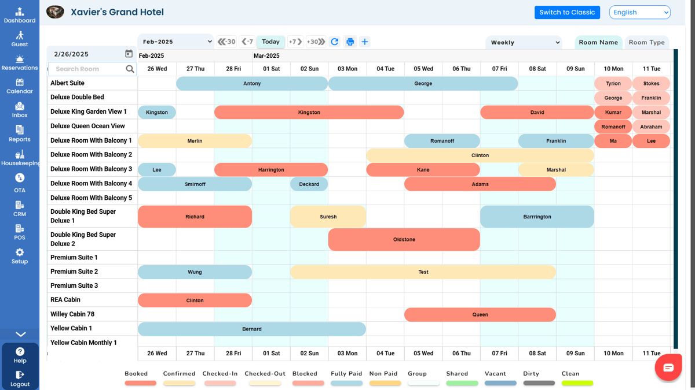
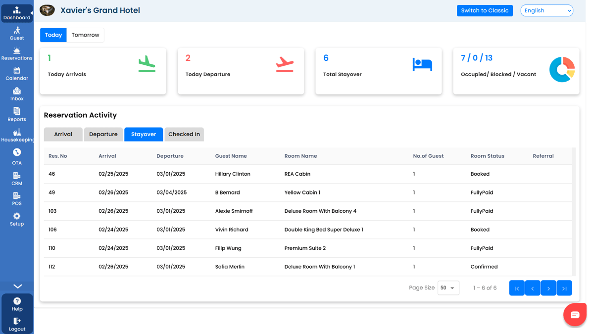

01
Capture the booking
Bring direct reservations and supported booking channels into your property’s workflow.
Explore direct bookingHOSPITALITY PROPERTY MANAGEMENT SOFTWARE
Less switching between systems. More time for your guests. Bring bookings, front desk operations and guest communication together with GraceSoft Easy InnKeeping.
For independent hotels, inns, resorts and more.
GraceSoft Easy InnKeeping is hospitality property management software for hotels, inns, resorts and other lodging businesses. It helps teams organize reservations, front desk tasks and guest information, with connected options for direct booking, channel distribution, payments and guest communication.
Products, integrations and workflows depend on your property’s plan and configuration. Confirm the right setup with GraceSoft.
THE GRACESOFT ECOSYSTEM
From the first inquiry to the final check-out, find the tools that keep your property moving.
Property management
See reservations, room availability and guest details in one workspace. Coordinate arrivals and departures with Easy InnKeeping.
Reservations · Room inventory · Guest profiles
Explore property managementBooking engine
Give guests a direct path from browsing your rooms to making a reservation on your property website.
Direct reservations · Room selection · Website bookings
Explore booking engineChannel manager
Explore availability and rate management across supported online travel agency (OTA) channels. Confirm connections for your property.
Channel connections · Availability · Rate management
Explore channel managerHousekeeping
Keep room status and housekeeping tasks visible as your team prepares for the next arrival.
Room status · Housekeeping tasks · Team coordination
Explore housekeepingPayments
Explore guest billing and payment processing options that fit your property’s setup.
Guest billing · Payment options · Transaction records
Explore paymentsPoint of sale
Connect on-property sales workflows with the hospitality operation. Explore point of sale for your property.
On-property sales · Guest charges · Sales reporting
Explore point of saleGuest CRM
Organize guest profiles and stay history to support more informed guest relationships.
Guest profiles · Stay history · Follow-up
Explore guest crmUnified inbox
Explore tools for bringing guest communication into one place, with channels configured for your property.
Guest messages · Conversations · Team visibility
Explore unified inboxAI voice & chat
Explore voice and chat options for guest inquiries, availability questions and reservation assistance.
Guest questions · Voice and chat · Reservation inquiries
Explore ai voice & chatGive each part of the stay a place in the bigger picture.
Bring direct reservations and supported booking channels into your property’s workflow.
Explore direct bookingKeep front desk, housekeeping, guest information and payments within reach.
Explore property managementUse guest history and communication tools to stay connected beyond check-out.
Explore guest CRMA CLOSER LOOK
Take a look inside Easy InnKeeping. Explore the reservation calendar and dashboard, then see your workflows in a personalized demo.


Actual Easy InnKeeping product screens. Appearance and available features may vary by configuration.
See it in a demoYOUR PROPERTY. YOUR WAY.
A small inn and a busy resort have different rhythms. Explore the GraceSoft tools that fit yours.
A clearer picture at the front desk.
02Make room for a more personal stay.
03More attention for every arrival.
04Connect the moving parts of a stay.
05Bring bookings and properties together.
06Keep outdoor hospitality organized.
07Explore operations across your portfolio.
08Find a workflow for your kind of stay.
Your software should support the way you welcome guests. Start with your daily work, then explore the connections that matter to your team.
Meet GraceSoftExplore reservations, operations and guest tools in one product ecosystem.
Bring your team’s work into a cloud-based property management system (PMS).
Talk through your channels, payment needs and operating model with GraceSoft.
Ask about onboarding, training and support arrangements for your chosen plan.
Hear from lodging teams about their experience with GraceSoft.
Hotel & conference center
Independent hospitality
Ideas for making direct reservations part of your B&B’s booking strategy.
A closer look at software for the distinct workflows of a dude ranch.
Explore common reservation pitfalls and practical ways to approach them.
Have a question about your property? Let’s talk it through.
Talk to our teamEasy InnKeeping is GraceSoft’s hospitality property management software. It helps lodging teams manage reservations, front desk work and guest information, with connected products for bookings, distribution, payments and communication.
GraceSoft describes solutions for hotels, motels, inns, bed and breakfasts, resorts, vacation rentals, campgrounds, condos, guest ranches and multi-property businesses. Discuss your specific property and workflow during a demo.
GraceSoft offers cloud-based property management software. Confirm device, connectivity and access requirements for your team’s setup.
GraceSoft offers multi-property management options. Ask which portfolio workflows, permissions and reporting features are available for your configuration.
The GraceSoft online booking engine provides a direct booking option for your property website. Ask how it connects to your website, inventory and chosen payment setup.
Channel Manager connects to supported online travel agency channels. Check the current channel list with GraceSoft and confirm connection mode, plan and regional availability for your property.
GraceSoft describes payment processing, billing and housekeeping capabilities. Available gateways, room-status workflows and task options depend on your plan and configuration.
GraceSoft offers AI voice and chat options alongside guest communication products. Ask about supported channels, availability, setup and how inquiries connect to your reservation workflow.
Ask GraceSoft about onboarding, training, support channels and service hours for your plan. Existing customers can use the GraceSoft Support Center.
Use Book a demo to visit GraceSoft’s existing demo request page. You can also view the pricing page and discuss the products, integrations and setup your property needs.
LET’S MAKE ROOM FOR WHAT MATTERS
See how GraceSoft Easy InnKeeping can fit your property, your people and your way of welcoming guests.